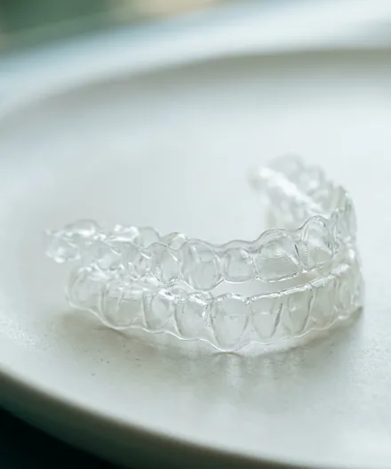
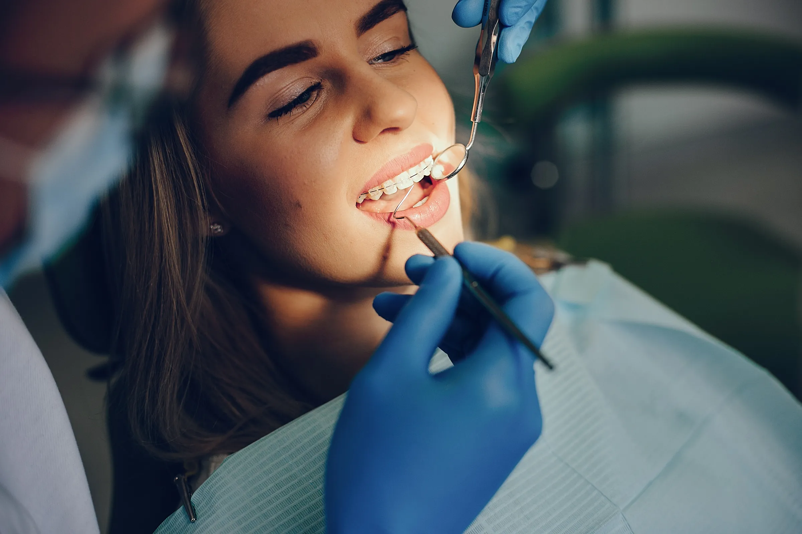
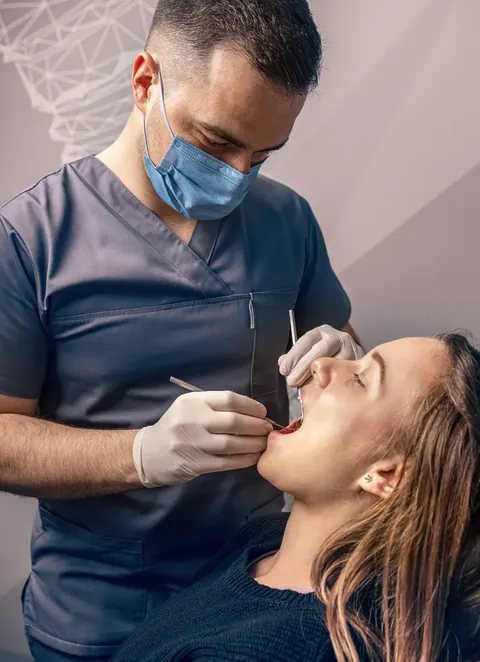
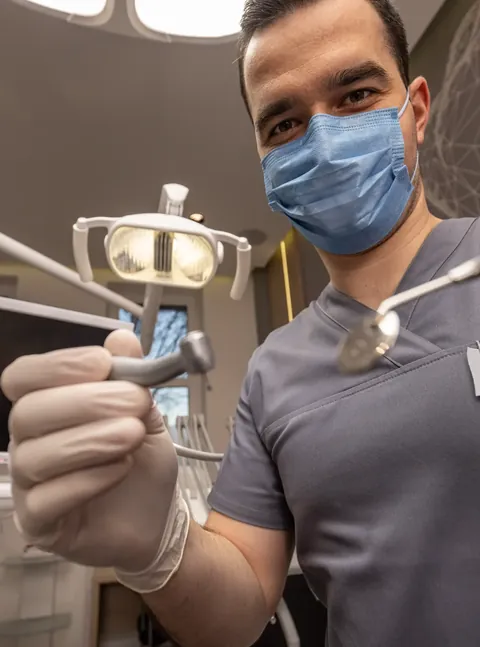
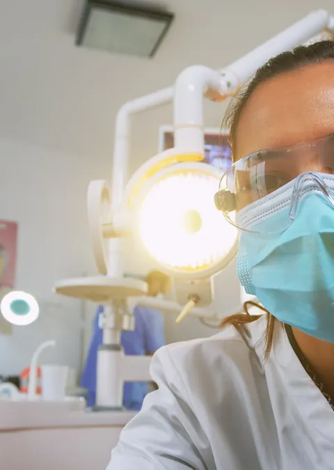
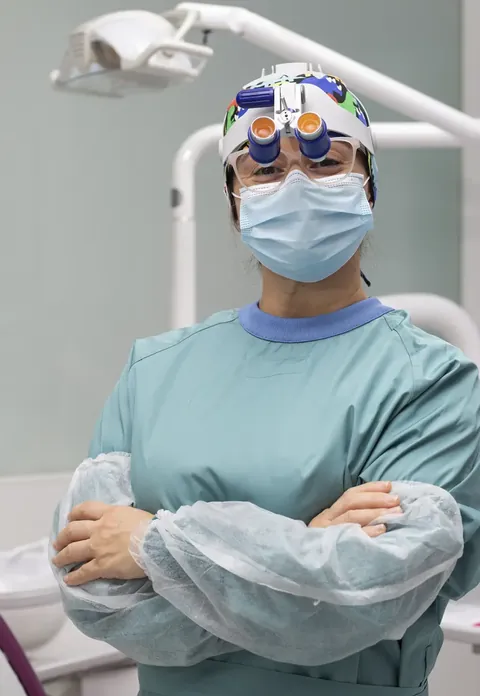
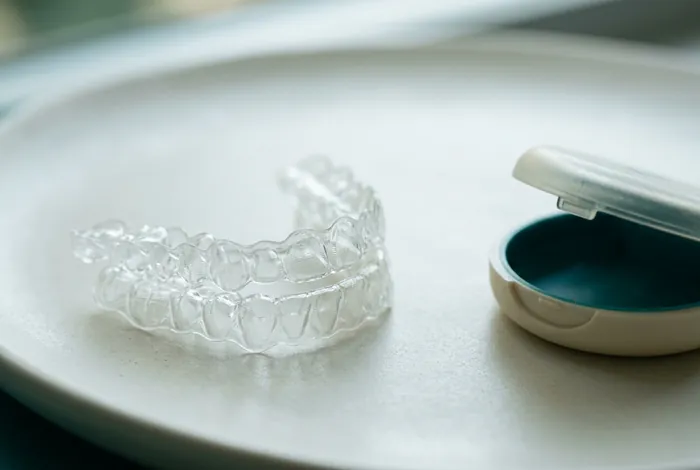
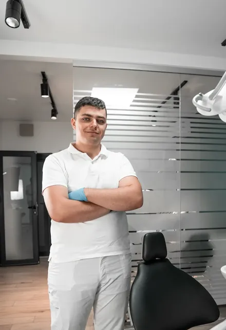
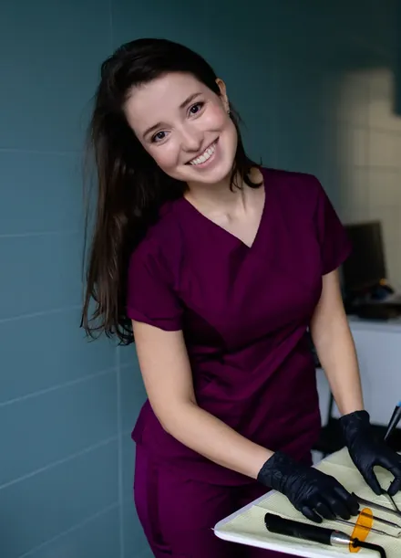
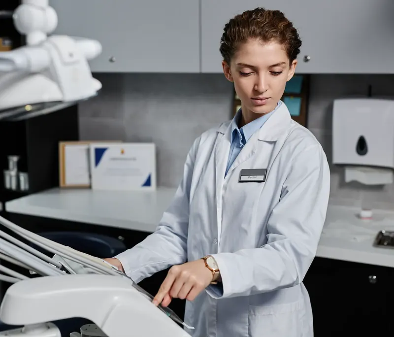

01
Alinhadores transparentes
Placas trocadas a cada 10 a 14 dias, planejadas no software antes da primeira.
Marcar avaliação →
Ortodontia & estética dental · Moinhos de Vento, Porto Alegre
Alinhamento, clareamento e reabilitação planejados no digital, com a mesma dentista do começo ao fim do tratamento.
A clínica
Na Marfim, o kit esterilizado é aberto no início da consulta, com você olhando. Autoclave classe B, rastreio de cada ciclo e salas com troca de ar entre um paciente e outro. Parece detalhe, e é por isso que a gente cuida.
Tratamentos

Placas trocadas a cada 10 a 14 dias, planejadas no software antes da primeira.
Marcar avaliação →
Resina ou cerâmica, com ensaio na boca antes de qualquer desgaste.
Marcar avaliação →
Guia cirúrgico impresso a partir da tomografia: menos corte, recuperação mais curta.
Marcar avaliação →
Uma hora inteira: profilaxia, raio-X quando precisa e um plano escrito para levar.
Marcar avaliação →
Endodontia com magnificação e localizador apical, em geral numa sessão só.
Marcar avaliação →Planejador de alinhamento
Escolha o tipo de aparelho e arraste a régua até o caso que parece com o seu. É uma estimativa para conversar; o plano de verdade sai do escaneamento na primeira consulta.
Apinhamento leve

Alinhador transparenteConsultório 2 · cadeira roxa, piso de madeira
Equipe
Quem planeja o seu caso acompanha cada retorno. Se precisar de outra especialidade, o colega entra na conversa, não em outro endereço.
Ortodontia e alinhadores · CRO-RS 21.457

Implantes e prótese · CRO-RS 18.302

Dentística e endodontia · CRO-RS 24.990
Você conta o que incomoda. A gente escuta antes de olhar.
Seis minutos de scanner e o modelo 3D aparece na tela.
Opções, prazos e valores no papel, sem empurrar nada.
Pode levar para casa, pensar e voltar quando quiser.
Dúvidas
Atendemos particular, com emissão de nota para reembolso. Para limpeza e check-up, aceitamos três planos odontológicos; confirme o seu pelo WhatsApp.
Para a maioria, sim. Casos com rotação severa ou extrações às vezes andam melhor com o autoligado. Isso aparece no planejamento, antes de qualquer compromisso.
Feito com gel na concentração certa e moldeira sob medida, não. Pode dar sensibilidade nos primeiros dias, que a gente controla com dessensibilizante.
Pacientes da clínica têm um número de plantão para dor e fratura, inclusive aos domingos.

Contato
Responda três coisas e a recepção devolve com os horários livres da semana. Prefere falar agora? O WhatsApp responde das 8h às 20h.